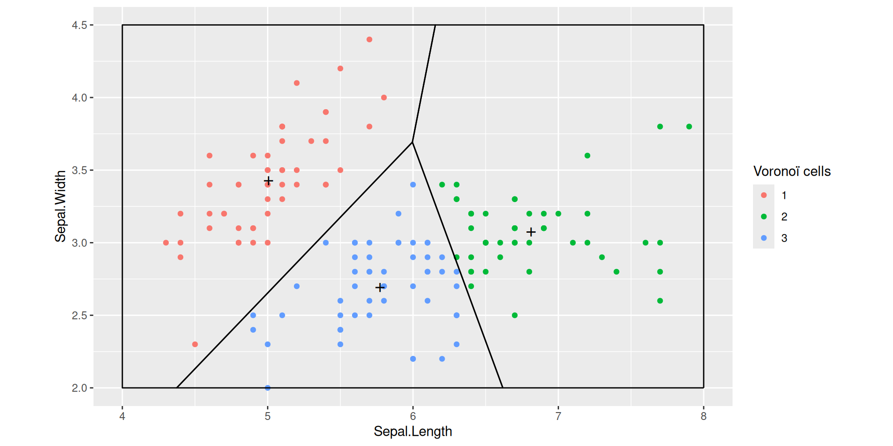

Clustering and k-means
Analyse de Données Master MIDS
Équipe EAD
2025-04-02
Clustering problems
In words
Clustering consists in partitioning points collections from some metric space
in such a way that
- points within the same group are close enough
while
- points from different groups are distant
Clustering in ML applications
Clustering shows up in many Machine Learning applications, for example:
Marketing: finding groups of customers with similar behavior given a large database of customer data containing their properties and past buying records
Biology: classification of plants and animals given their features
Bookshops: book ordering (recommendation)
Insurance: identifying groups of motor insurance policy holders with a high average claim cost; identifying frauds
City-planning: identifying groups of houses according to their type, value and geographical location
Internet: document classification; clustering weblog data to discover groups of similar access patterns; topic modeling
A clustering application relies on the elaboration of a metric/dissimilarity over some input space
This tasks is entangled with feature engineering
Focus on one specific context: market segmentation
Data: Base of customer data containing their properties and past buying records
Goal: Use the customers similarities to find groups
-
Possible directions:
Dimension reduction (PCA, CA, MCA, …)
Clustering \(\approx\) non-supervised classification
Dimension reduction
Dimension reduction technologies start form:
Training data \(\mathcal{D}=\{\vec{X}_1,\ldots,\vec{X}_n\} \in \mathcal{X}^n\) (i.i.d. \(\sim \Pr\))
Space \(\mathcal{X}\) of possibly high dimension.
and elaborate a Dimension Reduction Map
Dimension reduction technologies construct a map \(\Phi\) from the space \(\mathcal{X}\) into a space \(\mathcal{X}'\) of smaller dimension
Clustering techniques
Clustering techniques start from training data:
\[\mathcal{D}=\{\vec{X}_1,\ldots,\vec{X}_n\} \in \mathcal{X}^n\]
assuming \(\vec{X}_i \sim_{\text{i.i.d.}} \Pr\), and partition the data into (latent?) groups,
Clustering techniques construct a map \(f\) from \(\mathcal{D}\) to \(\{1,\ldots,K\}\) where \(K\) is a number of classes to be fixed: \(f: \quad \vec{X}_i \mapsto k_i\)
Dimension reduction and clustering may be combined
For example, it is commonplace to first perform PCA, project the data on the leading principal components and then perform \(k\)-means clustering on the projected data
Clustering tasks may be motivated along different directions:
The search for an interpretation of groups
Use of groups in further processing (prediction, …)
Good clustering
We need to define the quality of a cluster
Unfortunately, no obvious quality measure exists!
Clustering quality may be assessed by scrutinizing
Inner homogeneity: samples in the same group should be similar
Outer inhomogeneity: samples in two different groups should be different.
Shades of similarity
There are many possible definitions of similar and different
Often, they are based on the distance between the samples
Examples based on the (squared) Euclidean distance:
Inner homogeneity \(\approx\) intra class variance/inertia,
Outer inhomogeneity \(\approx\) inter class variance/inertia.
Remember that, in flat clustering, the choice of the number \(K\) of clusters is often delicate
Kleinberg’s theorem
Clustering is not a single method
Clustering methods address a large range of problems.
Definition Clustering function
Define a clustering function \(F\) as a function that
- takes as input any finite domain \(\mathcal{X}\) with a dissimilarity function \(d\) over its pairs
and
- returns a partition of \(\mathcal{X}\)
Desirable properties
A clustering function should ideally satisfy the next three properties
Scale Invariance. For any domain set \(\mathcal{X}\), dissimilarity function \(d\), and any \(\alpha>0\), the following should hold: \(F(\mathcal{X},d) = F(\mathcal{X},\alpha d)\).
Richness For any finite \(\mathcal{X}\) and every partition \(C = (C_1,\ldots,C_k)\) of \(\mathcal{X}\) (into nonempty subsets) there exists some dissimilarity function \(d\) over \(\mathcal{X}\) such that \(F(\mathcal{X},d)=C\).
-
Consistency If \(d\) and \(d'\) are dissimilarity functions over \(\mathcal{X}\), such that for all \(x, y \in \mathcal{X}\),
- if \(x,y\) belong to the same cluster in \(F(\mathcal{X},d)\) then \(d'(x,y) \leq d(x,y)\),
- if \(x,y\) belong to different clusters in \(F(\mathcal{X},d)\) then \(d'(x,y) \geq d(x,y)\),
then \(F(\mathcal{X},d) = F(\mathcal{X},d')\).
Designing clustering functions meeting simultaneously any two of the three properties is doable
but
The three reasonable goals are conflicting
Kleinberg’s impossibility theorem
Theorem
No clustering function \(F\) satisfies simultaneously all three properties:
Scale Invariance,
Richness, and
Consistency
Flavors of clustering
Flat/Hierarchical and …
A wide variety of clustering methods have been used in Statistics and Machine Learning.
- Flat clustering (for example \(k\)-means) partitions sample into a fixed number of classes (usually denoted by \(k\)). The partition is determined by some algorithm
.f6[The ultimate objective is to optimize some cost function. Whether the objective is achieved or even approximately achieved using a reasonable amount of computational resources is not settled]
- Model based clustering is based on a generative model: data are assumed to be sampled from a specific model (usually finite mixtures of Gaussians, the model may or may not be parametric)
.f6[Clustering consists in fitting such a mixture model and then assigning sample points to mixture components]
- Hierarchical clustering is the topic of next lesson
Carte du tendre
In Machine Learning, \(k\)-means and hierarchical clustering belong to a range of tasks called non-supervised learning
This contrasts with regression which belongs to the realm of supervised learning
k-means
The \(k\)-means algorithm is an iterative method that constructs a sequence of Voronoï partitions
A Voronoï diagram draws the nearest neighbor regions around a set of points.
Definition: Voronoï partitions
Assume:
- sample \(X_1, \ldots, X_n\) from \(\mathbb{R}^p\)
- \(\mathbb{R}^p\) is endowed with a metric \(d\), usually \(\ell_2\), sometimes a weighted \(\ell_2\) distance or \(\ell_1\)
Each cluster is defined by a centroid
The collection of centroids is (sometimes) called the codebook \(\mathcal{C}=c_1, \ldots, c_k\)
Each centroid \(c_j\) defines a class:
\[C_j = \bigg\{ X_i : d(X_i, c_j) = \min_{j' \leq k} d(X_i, c_{j'})\bigg\}\]
and more generally a Voronoï cell in \(\mathbb{R}^p\)
\[C_j = \bigg\{ x : x \in \mathbb{R}^p, d(x, c_j) = \min_{j' \leq k} d(x, c_{j'})\bigg\}\]
A Voronoï tesselation
Euclidean distance, dimension 2
A voronoi tesselation generated by \(100\) points picked at random on the gred \(\{1,\ldots, 200\}^2\)
Note that cell boundaries are line segments
Note that centroids may lie close to boundaries
The position of the centroid of a Voronoi cell depends on the positions of the centroids of the neighboring cells
A Voronoi partition for projected Iris dataset
The black points marked with a cross define three centroids.
The straight lines delimit the Voronoï cells defined by the three centroids.
The colored points come from the Iris dataset: each point is colored according to the the cell it belongs to.
Adding centroids
k-means objective function
The \(k\)-means algorithm aims at building a codebook \(\mathcal{C}\) that minimizes
\(\mathcal{C} \mapsto \sum_{i=1}^n \min_{c \in \mathcal{C}} \norm X_i - c \norm_2^2\)
over all codebooks with given cardinality
If \(c \in \mathcal{C}\) is the closest centroid to \(X \in \mathbb{R}^p\),
\[\|c - X\|^2\]
is the quantization/reconstruction error suffered when using codebook \(\mathcal{C}\) to approximate \(X\)
If there are no restrictions on the dimension of the input space, on the number of centroids, or on sample size, computing an optimal codebook is a \(\text{NP}\) -hard problem
\(k\) -means at work
We may figure out what an optimized Voronoï partition looks like on the Iris dataset
kmeans with \(k=3\) on the Iris dataset
Function kmeans is run with default arguments
We chose the Sepal plane for clustering and visualization
This is arbitrary. We could have chosen a Petal plane, a Width plane, or a plane defined by principal axes.
A \(k\)-means clustering is completely characterized by the \(k\) centroids
Once centroids are known, clusters can be recovered by searching the closest centroid for each sample point (that is by delimiting the Voronoï cells).
How can we assess the quality of a \(k\)-means clustering?
Can we compare the clusterings achieved by picking different values of \(k\)?
There is no obvious assessment criterion!
The quality of a clustering can be appreciated according to a wide variety of performance indicators
- Distortion: this is the \(k\)-means cost
- Shape of clusters
- Relevance of clusters
- Stability: does clustering depend on few points?
Caveat
When visualizing \(k\)-means clustering on Iris data, we are cheating.
We have a gold standard classification delivered by botanists
The botanists classification can be challenged
We can compare classification originating from phenotypes (appearance) and classification based on phylogeny (comparing DNAs)
Summarising a \(k\)-means clustering
A clustering can be summarized and illustrated.
In A meaningful summary is provided by the generic function summary(), or a tidy summary is providede by broom::tidy(...)
| Sepal.Length | Sepal.Width | size | withinss | cluster |
|---|---|---|---|---|
| 6.81 | 3.07 | 47.00 | 12.62 | 1 |
| 5.01 | 3.43 | 50.00 | 13.13 | 2 |
| 5.77 | 2.69 | 53.00 | 11.30 | 3 |
The concise summary tells us the number of points that are assigned to each cluster, and the Within Sum of Squares (WNSS). It says something about inner homogeneity and (apparently) nothing about outer homogeneity
\(k\)-means with \(k=2\)
We pursue the exploration of kmeans by building another clustering for Iris dataset.
This times with \(k=2\).
| Sepal.Length | Sepal.Width | size | withinss | cluster |
|---|---|---|---|---|
| 5.22 | 3.13 | 83.00 | 35.09 | 1 |
| 6.61 | 2.97 | 67.00 | 23.11 | 2 |
How should we pick \(k\)?
Even if we could compute a provably optimal codebook for each \(k\), choosing \(k\) would not be obvious
A common recipe consists of plotting within clusters sum of squares (WNSS) against \(k\)
Within clusters sum of squares (WNSS) decreases sharply between \(k=2\) and \(k=3\)
For larger values of \(k\), the decay is much smaller.
The elbow rule of thumb suggests to choose \(k=3\).
We have run kmeans over the Iris dataset, for \(k\) in range \(2, \ldots, 10\). For each value of \(k\), we performed \(32\) randomized initializations, and chose the partition that minimizes within clusters sum of squares
Incentive to choose \(k=4\)?
Depending on initialization, taking \(k=4\) creates a cluster at the boundary between versicolor and virginica or it may split the setosa cluster
| Sepal.Length | Sepal.Width | size | withinss | cluster |
|---|---|---|---|---|
| 5.518182 | 2.606061 | 33 | 5.967879 | 1 |
| 5.016327 | 3.451020 | 49 | 11.569388 | 2 |
| 7.283333 | 3.133333 | 18 | 3.905000 | 3 |
| 6.350000 | 2.942000 | 50 | 6.786800 | 4 |
Initialization matters!
Initialize by samples.
k-Mean++try to take them as separated as possible.No guarantee to converge to a global optimum!
Trial and error.
Repeat and keep the best result.
Lloyd’s Algorithm
Lloyd’s Algorithm (detailed) for fixed k (naive k-means)
Initialize Choose \(k\) centroids
Iterations: Two phases
(Movement) Assign each sample point to the closest centroid Assign each sample point to a class in the Voronoi partition defined by the centroids
(Update) For each class in the current Voronoi partition, update the centroid so as to minimize the Within Cluster Sum of Squared distances.
Lloyd’s iterations
After 1 step
Lloyd’s iterations after 2 steps
Lloyd’s iterations after 4 steps
Lloyd’s algorithm (analysis)
Analysis
Given
- codebook \(\mathcal{C} =\big\{c_1, \ldots, c_k\big\}\) and
- clusters \(C_1, \ldots C_k\),
the within-clusters sum of squares is defined as
\(\sum_{j=1}^k \sum_{i: X_i \in C_j} \bigg\Vert c_j - X_i \bigg\Vert^2\)
This is also the kmeans cost
Lemma
At each stage, the within clusters sums of squares does not increase
Proof
Let \(\mathcal{C}^{(t)} =\big\{ c^{(t)}_1, \ldots, c_k^{(t)}\big\}\) be the codebook after \(t\) steps
Let \(\big({C}^{(t)}_j\big)_{j \leq k}\) be the clusters after \(t\) steps
- Centroids at step \(t+1\) are the barycenters of clusters \(\big({C}^{(t)}_j\big)_{j \leq k}\)
\(c^{(t+1)}_j = \frac{1}{|C_j^{(t)}|} \sum_{X_i \in C^{(t)}_j} X_i\)
- Clusters \(C^{(t+1)}_j\) are defined by
\(C^{(t+1)}_j = \bigg\{ X_i : \Vert X_i - c^{(t+1)}_j\Vert = \min_{c \in \mathcal{C}^{(t+1)}} \Vert X_i - c\Vert \bigg\}\)
Each sample point is assigned to the closest centroid
Proof (continued)
\[\sum_{j=1}^k \sum_{X_i \in C^{(t)}_j} \bigg\Vert c^{(t)}_j - X_i\bigg\Vert^2 \geq \sum_{j=1}^k \sum_{X_i \in C^{(t)}_j} \bigg\Vert c^{(t+1)}_j - X_i\bigg\Vert^2\]
since for each \(j\), the mean \(c^{(t+1)}_j\) minimizes the average square distance to points in \(C^{(t)}_j\)
\[\sum_{j=1}^k \sum_{X_i \in C^{(t)}_j} \bigg\Vert c^{(t+1)}_j - X_i\bigg\Vert^2 \geq \sum_{j=1}^k \sum_{X_i \in C^{(t)}_j} \min_{c \in \mathcal{C}^{(t+1)}}\bigg\Vert c - X_i\bigg\Vert^2\]
\[\sum_{j=1}^k \sum_{X_i \in C^{(t)}_j} \min_{c \in \mathcal{C}^{(t+1)}}\bigg\Vert c - X_i\bigg\Vert^2 = \sum_{j=1}^k \sum_{X_i \in C^{(t+1)}_j} \bigg\Vert c^{(t+1)}_j - X_i\bigg\Vert^2\]
Variants of k-means
Implementations of \(k\)-means vary with respect to
- Initialization
k-means++- Forgy : pick initial centroids at random from the dataset
- Random partition : pick a random partition of the dataset and initialize centroids by computing means in each class
- …
- Movement/assignment
- Naive \(k\) means uses brute-force search for closest centroid. Each step requires \(\Omega(n \times k)\) operations
- Elkan (used by
scikit-learn) - Hartigan-Wong default
- …
Combining PCA and \(k\)-means
The result of a clustering procedure like kmeans can be visualized by projecting the dataset on a pair of native variables and using some aesthetics to emphasize the clusters
This is not always the best way.
First choosing a pair of native variables may not be straightforward. The projected pairwise distances may not faithfully reflect the pairwise distances that serve for clustering.
It makes sense to project the dataset of the \(2\)-dimensional subspace that maximizes the projected inertia, that is on the space generated by the first two principal components
PCA, projection, \(k\)-means
The kmeans clustering of the Iris dataset is projected on the first two principal components: prcomp is used to perform PCA with neither centering nor scaling
kmeans is applied to the rotated data
The straight lines are the not the projections of the boundaries of the (4-dimensional) Voronoï cells defined by the clusters centroids, but the boundaries of the 2-dimensional Voronoï celles defined by the projections of the cluster centroids
Questions around k-means
Choosing \(k\)
Assessing clustering quality
Scaling or not scaling ?
Choosing a distance
Initialization methods
Movement/assignment update
Stopping rules
Conclusion
Euclidean distance is used as a metric and inertia is used as a measure of cluster scatter
The number of clusters \(k\) is an input parameter
Convergence to a local minimum may produce counterintuitive (“wrong”) results
The End
Clustering and k-means

MA7BY020 – Analyse de Données – M1 MIDS – UParis Cité